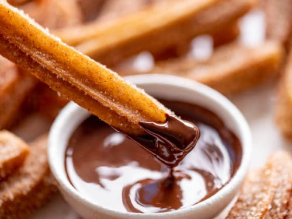

Sweet and Easy Homemade Churros
Churros are a beloved street food that originated in Spain, now cherished around the world for their crispy exterior and soft, warm interior. These golden, cinnamon-sugar-coated treats are not just a dessert, but a culinary experience that brings joy with every bite. Creating homemade churros might seem intimidating, but with the right technique and a bit of patience, anyone can master this delightful pastry. In this recipe, you'll learn how to craft perfect churros alongside a rich, decadent chocolate sauce that will elevate this classic treat from good to absolutely irresistible.
Ingredients
For Churros
- 1 cup of water
- 6 tablespoons of unsalted butter
- 1 tablespoon of granulated sugars
- 1/2 teaspoon of salt
- 1 cup of all purpose flour
- 2 eggs
- 1 teaspoon of vanilla extract
- Vegetable oil for frying
For Cinnamon Sugar Coat
- 1/2 granulated sugar
- 1 tablespoon of ground cinnamon
For Chocolate Dripping Sauce
- 3/4 cup of dark chocolate chips
- 3/4 heavy cream
- 1 teaspoon of ground cinnamon
Steps
- Prepare the Dough
- In a large saucepan, combine water,butter, sugar, and salt. Bring to a boil over medium heat
- Remove from heat and add flour all at once. Stir vigorously until the mixture forms a smooth dough
- Let the dough cool for about 10 minutes
- Add Eggs
- Beat eggs into the dough one at a time, mixing thoroughly after each addition
- The final mixture should be smooth and fluffy
- Prepare for Frying
- Transfer the dough to a piping bag fitted with a large star tip
- Heat vegetable oil in a large pot to 375°F, using a deep-fry thermometer to check the temperature
- Fry the Churros
- Carefully pipe 6-inch long churros directly into the hot oil
- Use kitchen scissors to cut the dough from the piping bag.
- Fry churros for about 2-3 minutes, turning occasionally, until golden brown
- Drain on paper towels
- Coat and Serve
- Mix sugar and cinnamon in a shallow dish
- While churros are still warm, roll them in the cinnamon-sugar mixture
- Mix Chocolate
- Heat the heavy cream to a simmer, pour in chocolate chips, and mix until chocolate is fully melted
Enjoy your delicous home made churros!